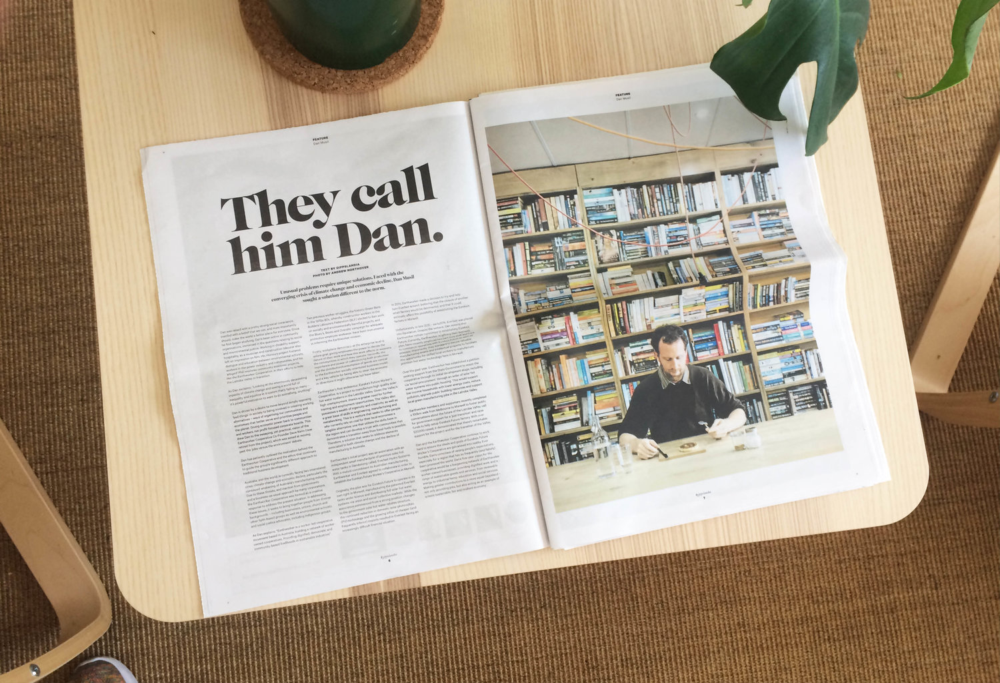
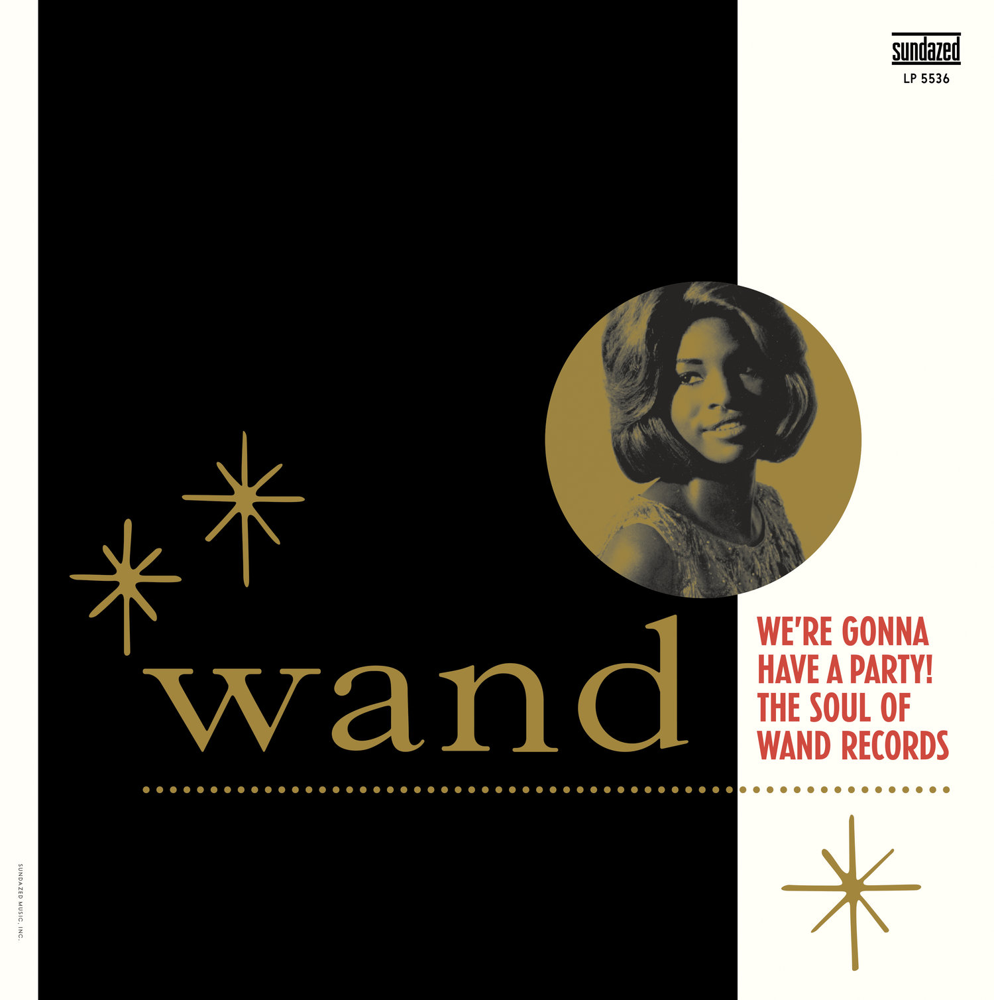
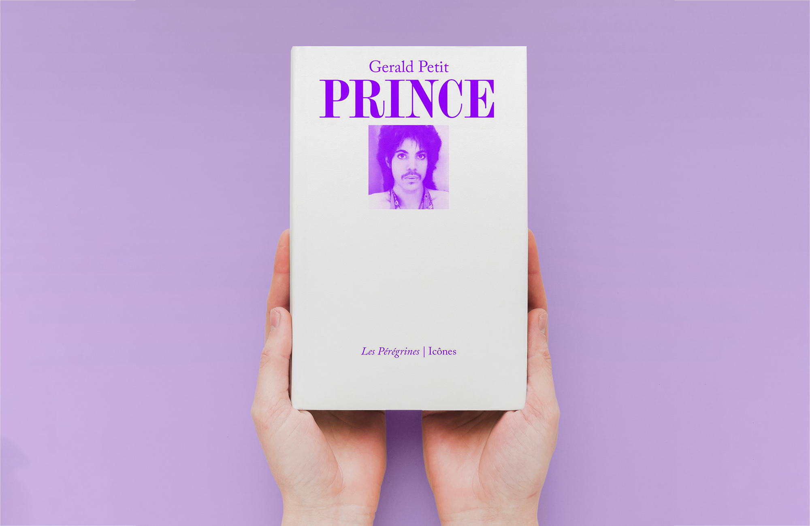
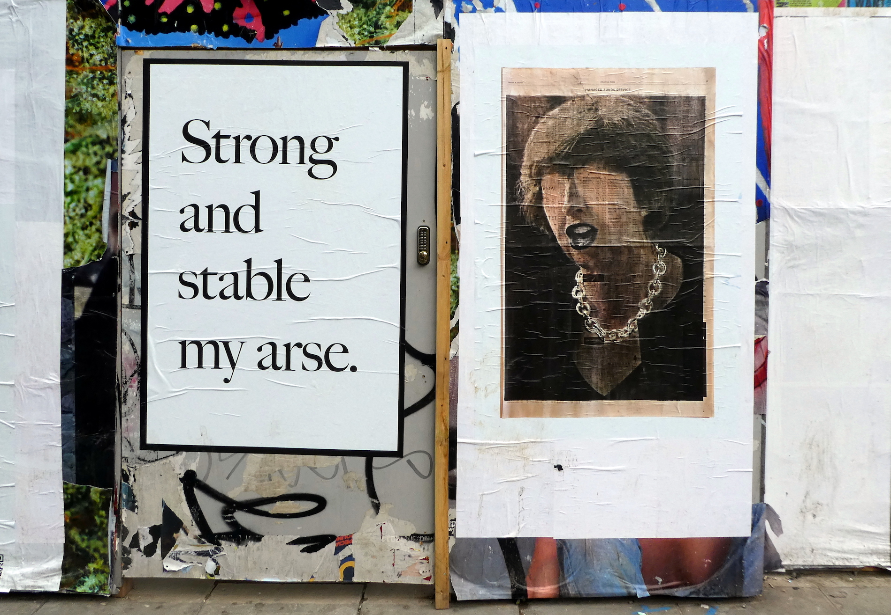
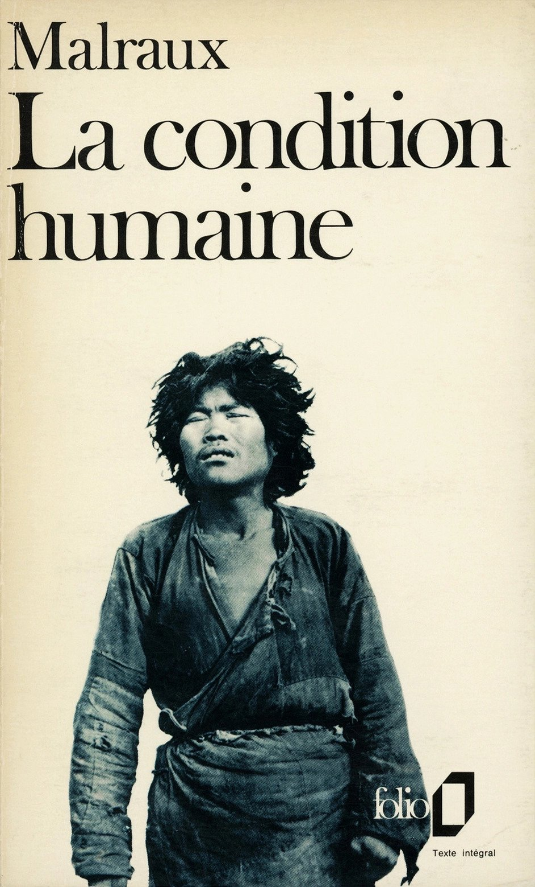
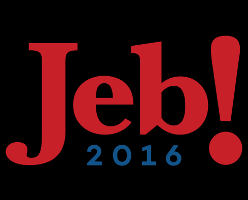
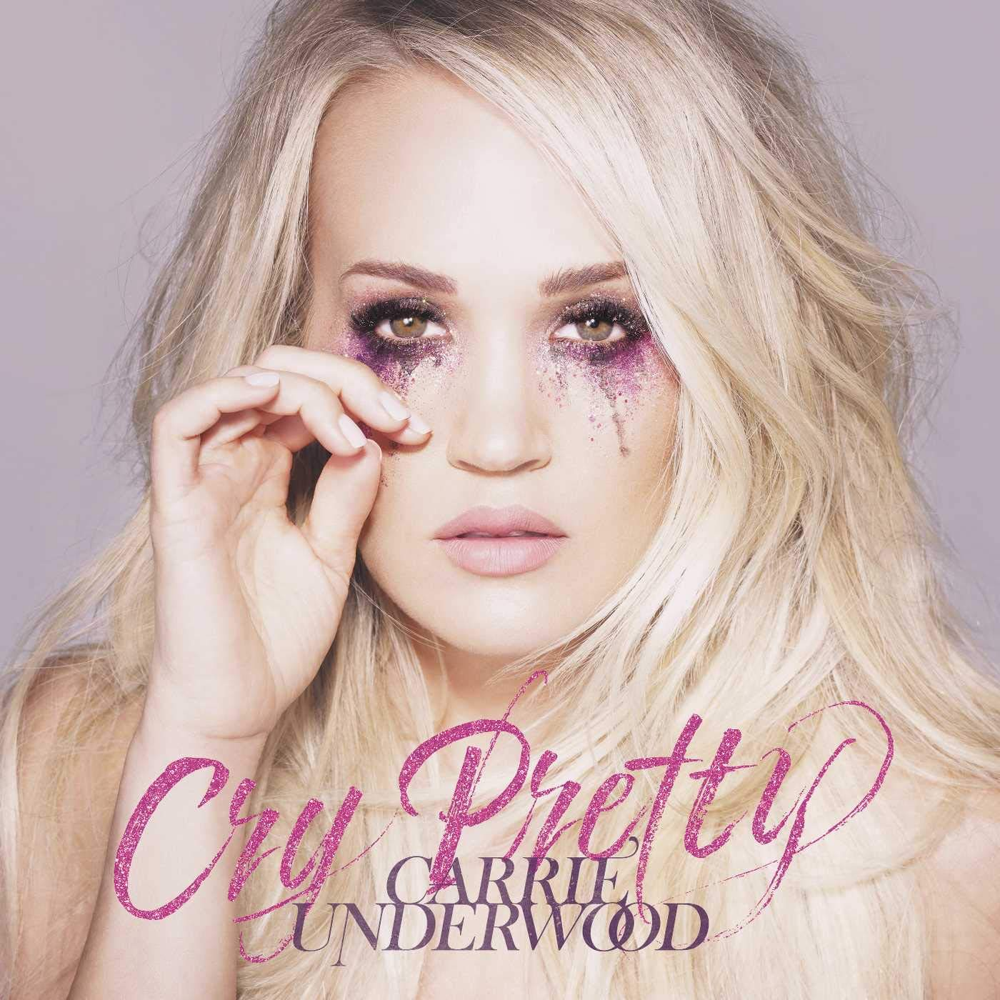
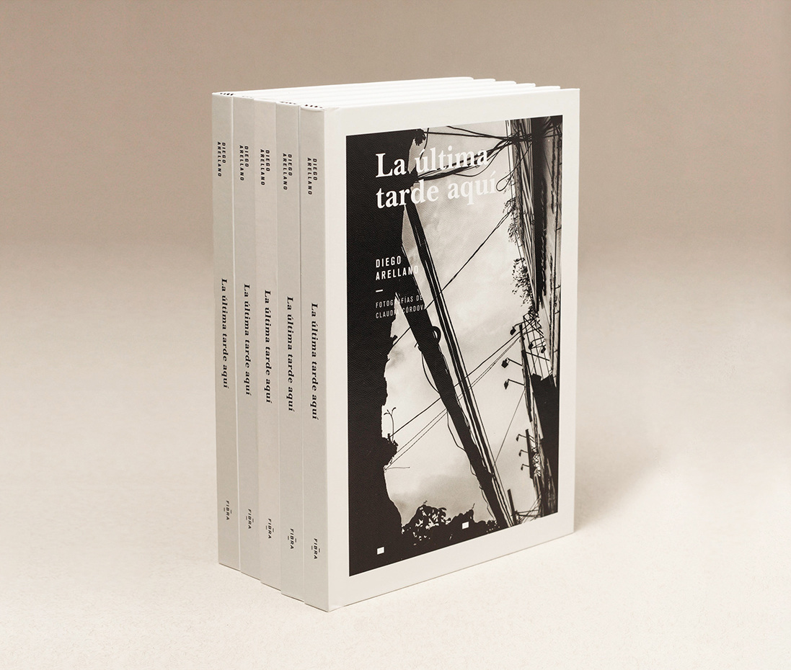
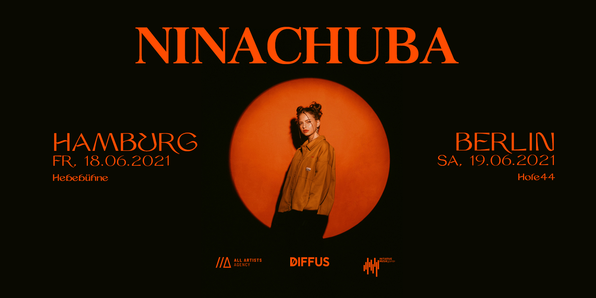

Caslon is an old style serif typeface that was designed in 1722 by William Caslon I, an English type designer who first began creating fonts in the early 1700s. Influenced by Dutch type, a style that was popular in England at the time, Caslon is characterized by its clean lines, strong serifs, and elegant proportions, which is why it is highly legible and popular for book printing. It has been widely used in printing, advertising, and publishing since its creation, including in the type for the American Declaration of Independence and Constitution. It was eventually redesigned to adapt to the needs of hot metal typesetting, phototypesetting, and eventually digital typesetting. All these typefaces are called “Caslon,” but have some variation from each individual designer and for the specific requirements for each method of typesetting. Carol Twombly designed the “Caslon” used by Adobe for digital typesetting in 1990, optimizing the typeface for both digital design and print, as well as adding additional glyphs and characters like small caps, swash caps, ligatures, etc.
Baskerville
The Baskerville typeface was designed in 1757 in Birmingham, England by John Baskerville, with the intent of improving Caslon in legibility and readability in industrial book printing. At the time of its creation, many thought that it was too different from old style typefaces, and it was not widely used until 1917. Nowadays it is used for academic publications and in the branding of many “homestyle” brands, as it is known for its clean lines, elegant appearance, and timeless appeal. It is considered a transitional typeface, meaning it bridges the typical styles of old style and modern typefaces. Compared to Caslon, Baskerville has more contrast between thick and thin strokes, sharper and more tapered serifs, more vertical stress. These changes were influenced by the calligraphy Baskerville had learned when he was younger.
Comparison
Similarities and Differences
Aa: The apex of the capital “A” differs between the typefaces; the Caslon “A” is curved.!?.,;:”: Baskerville punctuation marks include more contrast and cleaner lines.
Quintessential: The Caslon and Baskerville typefaces are similar in many aspects, but have slight differences. Tt: The serifs on Caslon characters are angled, while Baskerville serifs are more square. Alphabet: Caslon characters tend to be wider with less contrast between thin and thick strokes. Numbers: There are also slight differences in the numeral characters, most evident in the 6, 8, and 9. Oo: The capital O has more angled stress, while the Baskerville O was designed with minimal stress.
&: The ampersand in Caslon is wider with more flourishes, while the Baskerville ampersand is cleaner with more contrast. 69: The tails on the 6 and the 9 characters are tapered in Caslon, and more bulbous in Baskerville.@#: Caslon special characters were designed with more stress, and are thinner than the characters in Baskerville. Q: the tail on the capital Q is straighter in Caslon, and angled with more flourishes in Baskerville. Cc: The capital C in Caslon has a tapered end, while the Baskerville C has a serif that mirrors the top end.
Examples and visual references
Caslon
The text of the Declaration of Independence, written in the Caslon font on parchment paper. The font's elegant curves and classic design add to the document's historical significance.

A Gippslandia newspaper page displaying the use of the Caslon font, known for its elegant and classic design.

The album art for 'We're Gonna Have A Party! The Soul of Wand Records' features the timeless Caslon font, adding a classic touch to this collection of soulful tunes.

Regal and Timeless: The Prince by Gerald Petit in the Classic Caslon Font. Ten volumes have been released so far, each with a specific typographic treatment for the titles on the front cover.

A Bold Statement in Classic Caslon: Jeremy Deller's Poster Challenges the 'Strong and Stable' Slogan.
Baskerville

The paperback livres de poche (pocket book) titled “Folio” by French writer Éditions Gallimard.

The logo for Jeb Bush’s 2016 US presidential campaign, which uses Baskerville as the main typeface to evoke trustworthiness, playfulness, and reliability.

Carrie Underwood’s sixth studio album Cry Pretty, which uses a slanted and customized Baskerville for Underwood’s name at the bottom.

Elegance and Tradition: La última tarde aquí Book Series in the Classic Caslon Font.

Adding a touch of vintage charm to her tour promotions, Nina Chuba's tour posters feature the tour dates, locations, and additional information elegantly presented in the Caslon font.